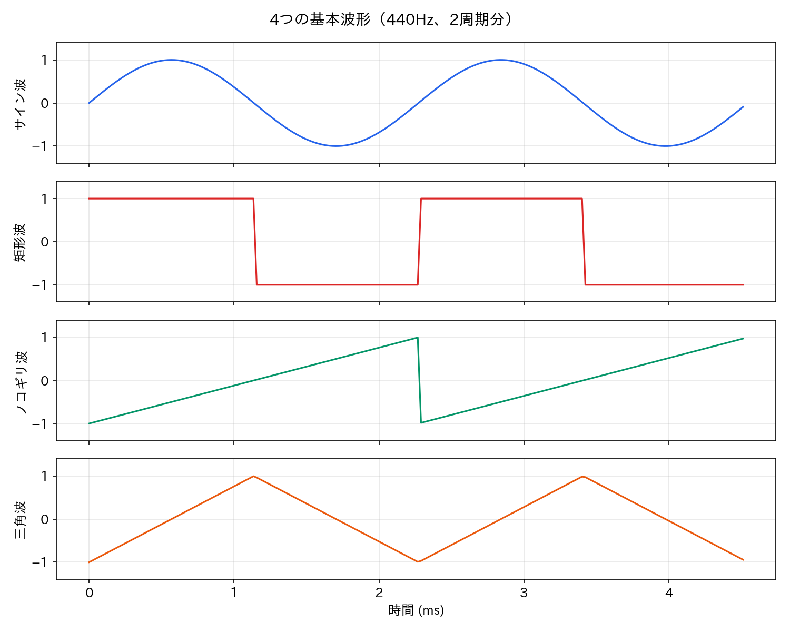
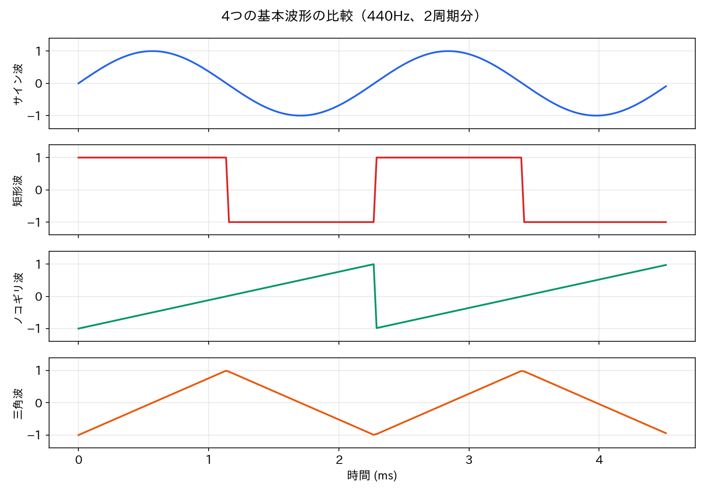
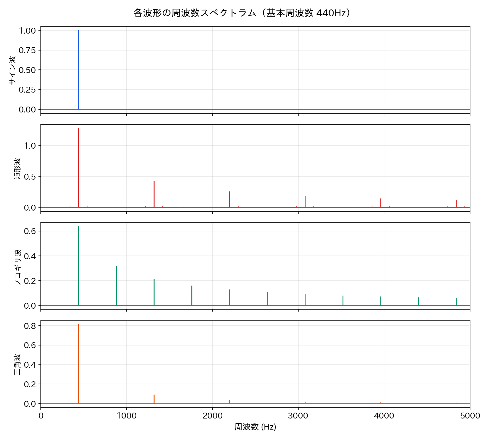
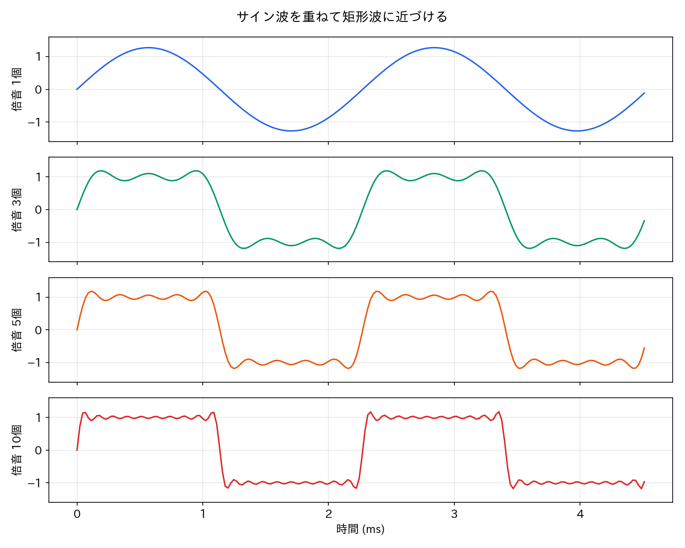
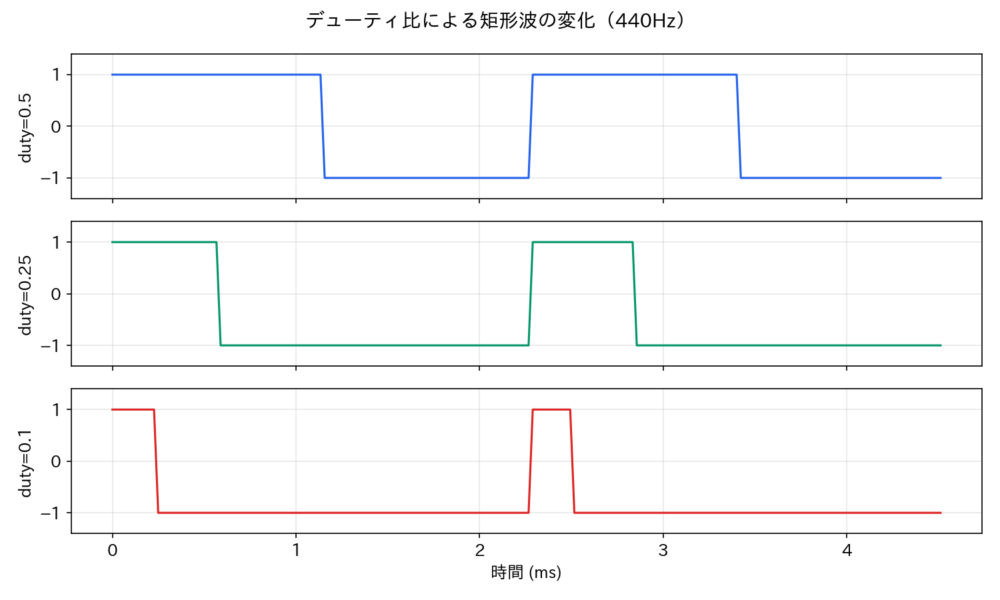

Lesson 2: 波形と音色の基礎¶
このレッスンで学ぶこと¶
- 基本的な波形（サイン波、矩形波、ノコギリ波、三角波）の違いを理解する
- 波形の違いが音色の違いになることを体験する
- Pythonで各波形を生成し、波形と音を比較する
- 倍音の考え方に触れる（次回以降への橋渡し）
Lesson 1 ではサイン波だけを扱いましたが、現実の音はもっと複雑です。このレッスンでは4つの基本波形を比較し、「波の形が変わると音色が変わる」ことを実感します。
セットアップ¶
新しいノートブックを開き、最初に Lesson 1 と同じセットアップセル（audio_lib のインストールと setup_environment()）を実行してください。続けて、今回使うライブラリを読み込みます。
import numpy as np
from IPython.display import display
from audio_lib import sine_wave, square_wave, sawtooth_wave, triangle_wave, AudioSignal
from audio_lib.notebook import play_sound, plot_waveform, plot_spectrum
2.1 4つの基本波形¶
電子音楽やシンセサイザーの世界では、次の4つが最も基本的な波形とされています。
| 波形 | 特徴 | 音の印象 |
|---|---|---|
| サイン波 | 滑らかな曲線 | 純粋で素朴な「ピー」 |
| 矩形波 | 値が +1 と −1 を交互に繰り返す | ファミコンのような「ビー」 |
| ノコギリ波 | 直線的に上昇し、急に下降 | 明るく鋭い「ジー」 |
| 三角波 | 直線的に上下を繰り返す | サイン波に近いが少し硬い「プー」 |
まずは4つの波形を一度に生成して、聞き比べてみましょう。
freq = 440 # すべて同じ周波数（ラの音）
dur = 2.0 # 2秒間
sig_sin = sine_wave(freq, dur)
sig_sq = square_wave(freq, dur)
sig_saw = sawtooth_wave(freq, dur)
sig_tri = triangle_wave(freq, dur)
display(play_sound(sig_sin, "サイン波"))
display(play_sound(sig_sq, "矩形波"))
display(play_sound(sig_saw, "ノコギリ波"))
display(play_sound(sig_tri, "三角波"))
すべて同じ440Hz なのに、音の「質感」がまったく違うことに気づくはずです。この質感の違いこそが音色（おんしょく、timbre）です。音の高さ（周波数）でも大きさ（振幅）でもない、第3の属性です。
2.2 波形を見る¶
波形をグラフで見てみましょう。最初の0.01秒（約4.4周期分）を表示します。
plot_waveform(sig_sin, duration=0.01, title="サイン波 (440Hz)")
plot_waveform(sig_sq, duration=0.01, title="矩形波 (440Hz)")
plot_waveform(sig_saw, duration=0.01, title="ノコギリ波 (440Hz)")
plot_waveform(sig_tri, duration=0.01, title="三角波 (440Hz)")

それぞれの特徴を確認しましょう。
- サイン波: なめらかな曲線。角がない
- 矩形波: +1 と −1 の間を瞬時に切り替わる。角ばった形
- ノコギリ波: 直線的に上昇し、頂点から一気に下降。のこぎりの歯のような形
- 三角波: 直線的に上昇・下降を繰り返す。サイン波に似ているが「角」がある
波形の「角ばり」が強いほど、音が鋭く明るく聞こえる傾向があります。この理由は倍音の含まれ方にあり、Lesson 4 で詳しく学びます。
2.3 各波形の数学的な定義¶
Lesson 1 ではサイン波の数式を確認しました。他の波形にも数学的な定義があります。理解を助けるために、ここでは各波形を素の Python で作ってみましょう。
サイン波（復習）¶
sample_rate = 44100
t = np.linspace(0, dur, int(sample_rate * dur), endpoint=False)
data_sin = np.sin(2 * np.pi * freq * t)
矩形波¶
矩形波は、1周期の前半が +1、後半が −1 の波形です。
\(\phi\)（ファイ）は \(ft\) を 1 で割った余り、つまり1周期の中での位置（0.0〜1.0）です。Python の (freq * t) % 1.0 に直接対応します。
# ft の小数部分（1周期の中での位置: 0.0〜1.0）
phase = (freq * t) % 1.0
# 前半は +1、後半は −1
data_sq = np.where(phase < 0.5, 1.0, -1.0)
np.where() は条件に応じて値を切り替える NumPy の関数です。phase < 0.5 が True の要素には 1.0 を、False の要素には -1.0 を代入します。
ノコギリ波¶
ノコギリ波は、−1 から始まり +1 まで直線的に上昇したあと −1 に急降下する波形です。
驚くほど単純な式です。\(\phi\)（phase）が 0 → 1 に変化するのを、−1 → +1 の範囲に変換しているだけです。
三角波¶
三角波は、直線的に −1 から +1 に上昇し、次に +1 から −1 に下降する波形です。
前半は −1 → +1 に上昇、後半は +1 → −1 に下降します。
audio_lib との対応¶
素の Python で作った data_sq は audio_lib の square_wave() と同じ結果になります。
audio_lib の sawtooth_wave() は、上記の単純な式ではなく帯域制限付き加算合成という方法で生成しています。これはエイリアシング（Lesson 1 参照）を防ぐためで、聞こえ方が少しだけ異なります。原理は Lesson 4 の倍音の話と関連するので、そこで改めて触れます。
2.4 波形を重ねて比較する¶
4つの波形を同じグラフに重ねると、形の違いがより明確になります。
import matplotlib.pyplot as plt
# 2周期分だけ表示（見やすさのため）
show_samples = int(sample_rate * 2 / freq) # 2周期分のサンプル数
t_show = t[:show_samples] * 1000 # ミリ秒に変換
fig, axes = plt.subplots(4, 1, figsize=(12, 8), sharex=True)
waves = [
(data_sin, "サイン波"),
(data_sq, "矩形波"),
(data_saw, "ノコギリ波"),
(data_tri, "三角波"),
]
for ax, (data, name) in zip(axes, waves):
ax.plot(t_show, data[:show_samples])
ax.set_ylabel(name)
ax.set_ylim(-1.3, 1.3)
ax.grid(True, alpha=0.3)
axes[-1].set_xlabel("時間 (ms)")
fig.suptitle("4つの基本波形（440Hz、2周期分）", fontsize=14)
plt.tight_layout()
plt.show()

2.5 周波数を変えて聞き比べる¶
波形の違いは、低い音ではより顕著に聞こえます。220Hz（低いラ）で試してみましょう。
freq_low = 220
display(play_sound(sine_wave(freq_low, 2.0), "サイン波 220Hz"))
display(play_sound(square_wave(freq_low, 2.0), "矩形波 220Hz"))
display(play_sound(sawtooth_wave(freq_low, 2.0), "ノコギリ波 220Hz"))
display(play_sound(triangle_wave(freq_low, 2.0), "三角波 220Hz"))
逆に高い周波数（2000Hz）にすると、波形による違いは小さくなります。
freq_high = 2000
display(play_sound(sine_wave(freq_high, 2.0), "サイン波 2000Hz"))
display(play_sound(square_wave(freq_high, 2.0), "矩形波 2000Hz"))
display(play_sound(sawtooth_wave(freq_high, 2.0), "ノコギリ波 2000Hz"))
display(play_sound(triangle_wave(freq_high, 2.0), "三角波 2000Hz"))
高い周波数では倍音がナイキスト周波数に近づくため、波形の違いが聞き取りにくくなります。
2.6 波形と倍音 — 音色が違う理由¶
なぜ波形が違うと音色が変わるのでしょうか。その答えは倍音（ばいおん、harmonics）にあります。
サイン波は「純粋な音」¶
サイン波はたった1つの周波数だけを含む、最も単純な波形です。440Hz のサイン波には 440Hz の成分しかありません。
他の波形は複数のサイン波の重ね合わせ¶
実は、矩形波やノコギリ波などの複雑な波形は、周波数の異なる複数のサイン波を足し合わせたものとして表現できます。これはフーリエ（Fourier）の発見した重要な原理です。
たとえばノコギリ波は、次のように無限個のサイン波の和で表されます。
ここで \(k=1\) が基本波（元の周波数 \(f\)）、\(k=2\) が第2倍音（\(2f\)）、\(k=3\) が第3倍音（\(3f\)）…です。
つまり、440Hz のノコギリ波には 440Hz、880Hz、1320Hz、1760Hz、… という成分が含まれています。この「どの倍音がどれだけ含まれているか」が音色を決めるのです。
各波形の倍音の特徴¶
| 波形 | 含まれる倍音 | 倍音の減衰 |
|---|---|---|
| サイン波 | 基本波のみ | — |
| 矩形波 | 奇数次のみ（1, 3, 5, 7, …） | \(1/k\) で減衰 |
| ノコギリ波 | すべて（1, 2, 3, 4, …） | \(1/k\) で減衰 |
| 三角波 | 奇数次のみ（1, 3, 5, 7, …） | \(1/k^2\) で減衰（速い） |
ノコギリ波がすべての倍音を含むため最も明るく聞こえ、三角波は倍音が急速に減衰するためサイン波に近い柔らかい音になります。
周波数スペクトラムで確認する¶
plot_spectrum() を使うと、音にどの周波数成分がどれだけ含まれているかを可視化できます。
plot_spectrum(sig_sin, max_freq=5000, title="サイン波のスペクトラム")
plot_spectrum(sig_sq, max_freq=5000, title="矩形波のスペクトラム")
plot_spectrum(sig_saw, max_freq=5000, title="ノコギリ波のスペクトラム")
plot_spectrum(sig_tri, max_freq=5000, title="三角波のスペクトラム")

- サイン波: 440Hz に1本のピークだけ
- 矩形波: 440Hz、1320Hz（3倍）、2200Hz（5倍）… 奇数倍にピーク
- ノコギリ波: 440Hz、880Hz（2倍）、1320Hz（3倍）… すべての整数倍にピーク
- 三角波: 440Hz、1320Hz（3倍）、2200Hz（5倍）… 奇数倍にピーク（矩形波より急速に減衰）
倍音についてはLesson 4 でさらに深く学びます。ここでは「波形の違い＝倍音の含まれ方の違い＝音色の違い」という対応を覚えておいてください。
2.7 倍音の重ね合わせを体験する¶
倍音の概念をより実感するために、サイン波を1つずつ足していって矩形波に近づけてみましょう。
矩形波のフーリエ級数は次の通りです。
# サイン波を1つずつ足して矩形波に近づける
for n_harmonics in [1, 3, 5, 10]:
data = np.zeros_like(t)
for k in range(1, n_harmonics * 2, 2): # 奇数次のみ: 1, 3, 5, ...
data += (1.0 / k) * np.sin(2 * np.pi * k * freq * t)
data *= 4.0 / np.pi
signal = AudioSignal(data, sample_rate)
display(play_sound(signal, f"奇数倍音 {n_harmonics}個"))
# 波形の変化を可視化
fig, axes = plt.subplots(4, 1, figsize=(12, 8), sharex=True)
labels = [1, 3, 5, 10]
for ax, n_harmonics in zip(axes, labels):
data = np.zeros_like(t)
for k in range(1, n_harmonics * 2, 2):
data += (1.0 / k) * np.sin(2 * np.pi * k * freq * t)
data *= 4.0 / np.pi
ax.plot(t_show, data[:show_samples])
ax.set_ylabel(f"{n_harmonics}個")
ax.set_ylim(-1.5, 1.5)
ax.grid(True, alpha=0.3)
axes[-1].set_xlabel("時間 (ms)")
fig.suptitle("サイン波を重ねて矩形波に近づける", fontsize=14)
plt.tight_layout()
plt.show()

1個のサイン波から始めて、奇数倍音を足すたびに波形が角ばっていき、矩形波に近づいていきます。音も「ピー」から「ビー」に変化していくのが聞き取れるはずです。
2.8 デューティ比 — 矩形波のバリエーション¶
矩形波にはデューティ比（duty cycle）というパラメータがあります。1周期の中で +1 の部分が占める割合です。
- デューティ比 0.5（50%）: 通常の矩形波。+1 と −1 が半々
- デューティ比 0.25（25%）: +1 の部分が短い。パルス波とも呼ばれる
- デューティ比 0.1（10%）: 非常に短い針のようなパルス
duty_cycles = [0.5, 0.25, 0.1]
for duty in duty_cycles:
sig = square_wave(freq, 2.0, duty_cycle=duty)
display(play_sound(sig, f"矩形波 デューティ比={duty}"))
fig, axes = plt.subplots(3, 1, figsize=(12, 6), sharex=True)
for ax, duty in zip(axes, duty_cycles):
sig = square_wave(freq, dur, duty_cycle=duty)
show_data = sig.data[:show_samples]
ax.plot(t_show, show_data)
ax.set_ylabel(f"duty={duty}")
ax.set_ylim(-1.3, 1.3)
ax.grid(True, alpha=0.3)
axes[-1].set_xlabel("時間 (ms)")
fig.suptitle("デューティ比による矩形波の変化", fontsize=14)
plt.tight_layout()
plt.show()

デューティ比を変えると倍音の構成が変わり、音色が変化します。ファミコンやゲームボーイの音楽では、デューティ比 50%、25%、12.5% の3種類の矩形波を使い分けて音色のバリエーションを出していました。
2.9 現実の音と基本波形¶
ここまで学んだ4つの波形は、シンセサイザーの基本素材です。では、ピアノやギターといった現実の楽器の音はどうでしょうか。
現実の音は、これらの基本波形よりもずっと複雑です。しかし原理は同じで、さまざまな周波数のサイン波の重ね合わせとして表現できます。違うのは次の点です。
- 倍音の構成が複雑: 楽器ごとに固有の倍音パターンがある
- 時間とともに変化する: 音の立ち上がり（アタック）から消え際（リリース）まで、倍音の構成が刻々と変化する
- ノイズ成分を含む: 弦を弾く音、息の音など、周期的でない成分も含まれる
これらの要素を組み合わせて現実的な音を作る技術が音声合成であり、シンセサイザーの中核技術です。
まとめ¶
このレッスンで学んだことを整理します。
| 概念 | 内容 |
|---|---|
| 音色（timbre） | 波形の違いから生まれる音の「質感」。高さでも大きさでもない第3の属性 |
| サイン波 | 最も基本的な波形。1つの周波数だけを含む |
| 矩形波 | +1 と −1 を交互に繰り返す。奇数次倍音を含む |
| ノコギリ波 | 直線的に上昇し急降下。すべての整数次倍音を含む |
| 三角波 | 直線的に上下。奇数次倍音を含むが急速に減衰 |
| 倍音 | 基本周波数の整数倍の周波数成分。倍音の構成が音色を決める |
| デューティ比 | 矩形波の +1 部分の割合。音色のバリエーションを生む |
| フーリエの原理 | あらゆる周期的な波形はサイン波の重ね合わせで表現できる |
使った audio_lib の関数¶
| 関数 | 役割 |
|---|---|
sine_wave(freq, duration) |
サイン波を生成 |
square_wave(freq, duration, duty_cycle=0.5) |
矩形波を生成 |
sawtooth_wave(freq, duration) |
ノコギリ波を生成 |
triangle_wave(freq, duration) |
三角波を生成 |
plot_spectrum(signal, max_freq) |
周波数スペクトラムを表示 |
次回予告¶
Lesson 3 では Sonic Pi に入門します。ここまで Python で学んだ波形の知識を持って、ライブコーディング環境で実際に音楽を作り始めます。Sonic Pi のシンセ（:beep、:square、:saw など）が、今回学んだ波形とどう対応するかを確認しましょう。